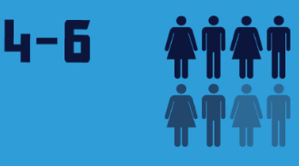

Outsmarting
|
|
John Riley
Principal Agile Coach and Trainer
|
### What is an ATS?
---
Software that streamlines the hiring process
### Why is it needed?
---
### Why should you care?
---
### Other facts
---
Large orgs that use an ATS...
- Source: Top Resume
Resumes received per week...

- Source: Top Resume
On average, a corporate job posting receives...
- Source: Top Resume
Of those applications, number contacted for an interview...

- Source: Top Resume
- Source: Top Resume
### How it works
---
### What the ATS looks for
---
### Increase your chances - easy
---

Mappable Location
Contact info on top
Simple, little formatting
Fill introduction with soft skills
List as many technologies used as possible
Simple format (PDF, Word doc, plain text, NO links)
### Ways to avoid an ATS
---
Networking
Small companies or start-ups
### Fortifying your chances
---

### Will the ATS filter you??
---
Click this --> Jobscan.co
### Thank you!
---

john@ReadySetAgile.com - John Riley
 https://www.linkedin.com/in/johril
https://www.linkedin.com/in/johril